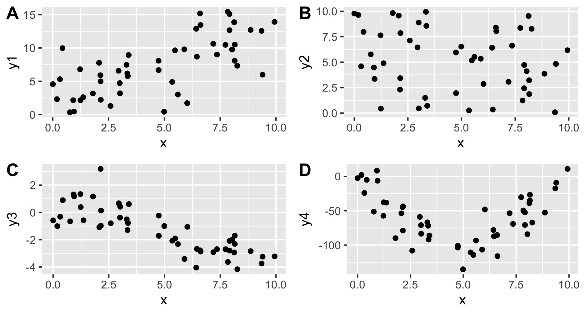
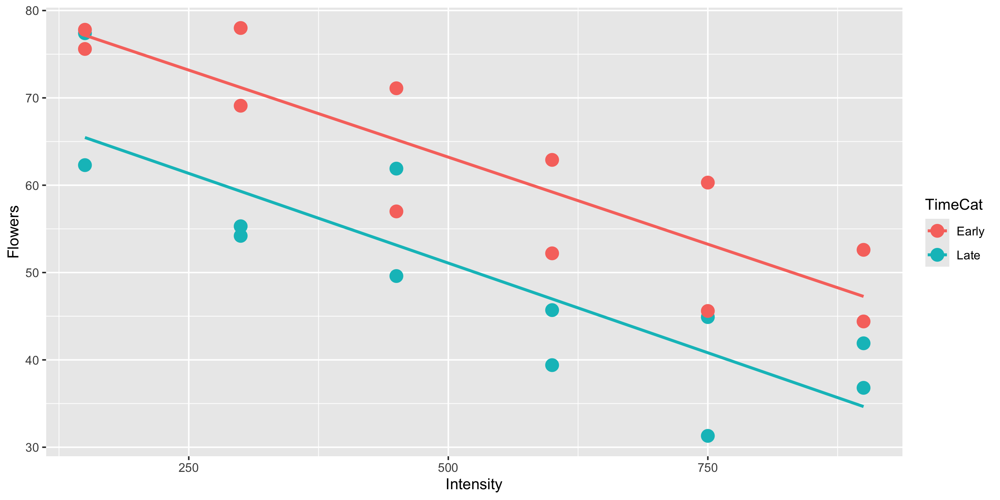
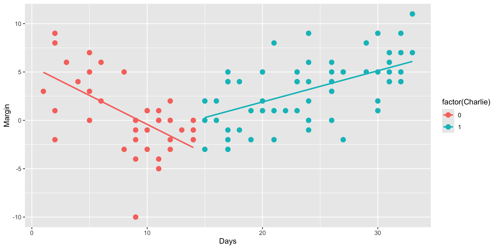
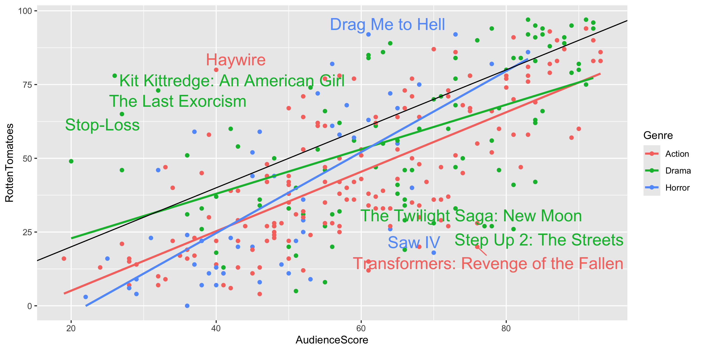
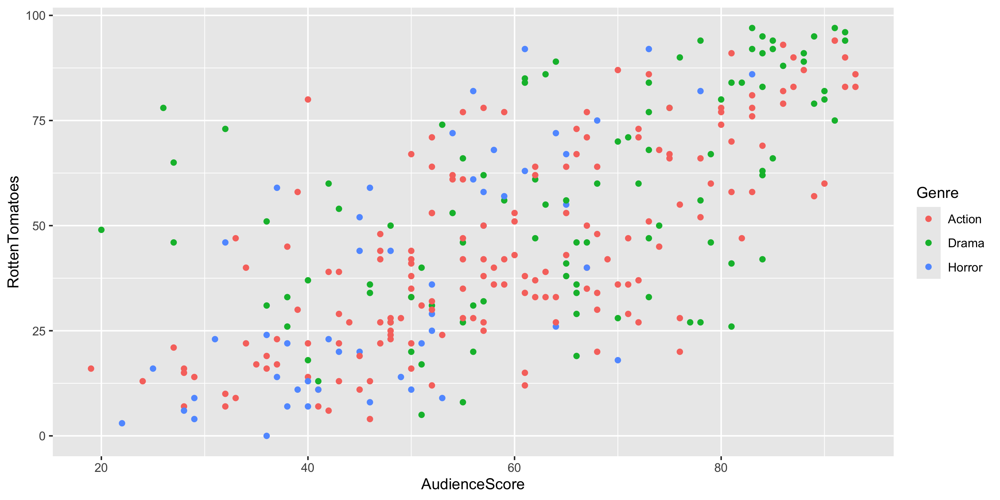

More Regression
Grayson White
Math 141
Week 4 | Fall 2025
Announcements
- Discuss next week’s exam!
Goals for Today
- Handling categorical, explanatory variables with more than 2 categories
- Regression with polynomial explanatory variables
Multiple Linear Regression
Form of the Model:
\[ \begin{align} y &= \beta_o + \beta_1 x_1 + \beta_2 x_2 + \cdots + \beta_p x_p + \epsilon \end{align} \]
How does extending to more predictors change our process?
- What doesn’t change:
- Still use Method of Least Squares to estimate coefficients
- Still use
lm()to fit the model andpredict()for prediction
- What does change:
- Meaning of the coefficients are more complicated and depend on other variables in the model
- Need to decide which variables to include and how (linear term, squared term…)
Multiple Linear Regression
We are going to see a few examples of multiple linear regression today and next lecture.
We will need to return to modeling later in the course once we have learned about statistical inference (i.e., confidence intervals and p-values).
But First: TREND STRETCHES!
Example
Meadowfoam is a plant that grows in the Pacific Northwest and is harvested for its seed oil. In a randomized experiment, researchers at Oregon State University looked at how two light-related factors influenced the number of flowers per meadowfoam plant, the primary measure of productivity for this plant. The two light measures were light intensity (in mmol/ \(m^2\) /sec) and the timing of onset of the light (early or late in terms of photo periodic floral induction).
Response variable:
Explanatory variables:
Model Form:
Data Loading and Wrangling
Visualizing the Data
Why don’t I have to include data = and mapping = in my ggplot() layer?
Building the Linear Regression Model
Full model form:
modFlowers <- lm(Flowers ~ Intensity + TimeCat, data = case0901)
library(moderndive)
get_regression_table(modFlowers)# A tibble: 3 × 7
term estimate std_error statistic p_value lower_ci upper_ci
<chr> <dbl> <dbl> <dbl> <dbl> <dbl> <dbl>
1 intercept 83.5 3.27 25.5 0 76.7 90.3
2 Intensity -0.04 0.005 -7.89 0 -0.051 -0.03
3 TimeCat: Late -12.2 2.63 -4.62 0 -17.6 -6.69- Estimated regression line for \(x_2 = 1\):
- Estimated regression line for \(x_2 = 0\):
Appropriateness of Model Form

Is the assumption of equal slopes reasonable here?
Prediction
New Example
For this example, we will use data collected by the website pollster.com, which aggregated 102 presidential polls from August 29th, 2008 through the end of September. We want to determine the best model to explain the variable Margin, measured by the difference in preference between Barack Obama and John McCain. Our potential predictors are Days (the number of days after the Democratic Convention) and Charlie (indicator variable on whether poll was conducted before or after the first ABC interview of Sarah Palin with Charlie Gibson).
Rows: 102
Columns: 11
$ PollTaker <fct> Rasmussen, Zogby, Diageo/Hotline, CBS, CNN, Rasmussen, ARG, …
$ PollDates <fct> 8/28-30/08, 8/29-30/08, 8/29-31/08, 8/29-31/08, 8/29-31/08, …
$ MidDate <fct> 8/29, 8/30, 8/30, 8/30, 8/30, 8/31, 8/31, 9/1, 9/2, 9/2, 9/2…
$ Days <int> 1, 2, 2, 2, 2, 3, 3, 4, 5, 5, 5, 5, 6, 6, 8, 8, 9, 9, 9, 9, …
$ n <int> 3000, 2020, 805, 781, 927, 3000, 1200, 1728, 2771, 1000, 734…
$ Pop <fct> LV, LV, RV, RV, RV, LV, LV, RV, RV, A, RV, LV, LV, RV, RV, R…
$ McCain <int> 46, 47, 39, 40, 48, 45, 43, 36, 42, 39, 42, 44, 46, 40, 48, …
$ Obama <int> 49, 45, 48, 48, 49, 51, 49, 40, 49, 42, 42, 49, 48, 46, 45, …
$ Margin <int> 3, -2, 9, 8, 1, 6, 6, 4, 7, 3, 0, 5, 2, 6, -3, 5, -4, -1, -2…
$ Charlie <int> 0, 0, 0, 0, 0, 0, 0, 0, 0, 0, 0, 0, 0, 0, 0, 0, 0, 0, 0, 0, …
$ Meltdown <int> 0, 0, 0, 0, 0, 0, 0, 0, 0, 0, 0, 0, 0, 0, 0, 0, 0, 0, 0, 0, …Response variable:
Explanatory variables:
Visualizing the Data
What is wrong with how one of the variables is mapped in the graph?
Visualizing the Data
Is the assumption of equal slopes reasonable here?
Model Forms
Same Slopes Model:
Different Slopes Model:
- Line for \(x_2 = 1\):
- Line for \(x_2 = 0\):
Fitting the Linear Regression Model
# A tibble: 4 × 7
term estimate std_error statistic p_value lower_ci upper_ci
<chr> <dbl> <dbl> <dbl> <dbl> <dbl> <dbl>
1 intercept 5.57 1.09 5.11 0 3.40 7.73
2 factor(Charlie): 1 -10.1 1.92 -5.25 0 -13.9 -6.29
3 Days -0.598 0.121 -4.96 0 -0.838 -0.359
4 factor(Charlie): 1:Days 0.921 0.136 6.75 0 0.65 1.19 - Estimated regression line for \(x_2 = 1\):
- Estimated regression line for \(x_2 = 0\):
Adding the Regression Model to the Plot

Is our modeling goal here predictive or descriptive?
Next time
- More regression!
Linear Regression
Model Form:
\[ \begin{align} y &= \beta_o + \beta_1 x_1 + \beta_2 x_2 + \cdots + \beta_p x_p + \epsilon \end{align} \]
Linear regression is a flexible class of models that allow for:
Both quantitative and categorical explanatory variables.
Multiple explanatory variables.
Curved relationships between the response variable and the explanatory variable.
BUT the response variable is quantitative.
Example: Movies
Let’s model a movie’s critic rating using the audience rating and the movie’s genre.
library(tidyverse)
movies <- read_csv("https://www.lock5stat.com/datasets2e/HollywoodMovies.csv")
# Restrict our attention to dramas, horrors, and actions
movies2 <- movies %>%
filter(Genre %in% c("Drama", "Horror", "Action")) %>%
drop_na(Genre, AudienceScore, RottenTomatoes)
glimpse(movies2)Rows: 313
Columns: 16
$ Movie <chr> "Spider-Man 3", "Transformers", "Pirates of the Carib…
$ LeadStudio <chr> "Sony", "Paramount", "Disney", "Warner Bros", "Warner…
$ RottenTomatoes <dbl> 61, 57, 45, 60, 20, 79, 35, 28, 41, 71, 95, 42, 18, 2…
$ AudienceScore <dbl> 54, 89, 74, 90, 68, 86, 55, 56, 81, 52, 84, 55, 70, 6…
$ Story <chr> "Metamorphosis", "Monster Force", "Rescue", "Sacrific…
$ Genre <chr> "Action", "Action", "Action", "Action", "Action", "Ac…
$ TheatersOpenWeek <dbl> 4252, 4011, 4362, 3103, 3778, 3408, 3959, 3619, 2911,…
$ OpeningWeekend <dbl> 151.1, 70.5, 114.7, 70.9, 49.1, 33.4, 58.0, 45.3, 19.…
$ BOAvgOpenWeekend <dbl> 35540, 17577, 26302, 22844, 12996, 9791, 14663, 12541…
$ DomesticGross <dbl> 336.53, 319.25, 309.42, 210.61, 140.13, 134.53, 131.9…
$ ForeignGross <dbl> 554.34, 390.46, 654.00, 245.45, 117.90, 249.00, 157.1…
$ WorldGross <dbl> 890.87, 709.71, 963.42, 456.07, 258.02, 383.53, 289.0…
$ Budget <dbl> 258.0, 150.0, 300.0, 65.0, 140.0, 110.0, 130.0, 110.0…
$ Profitability <dbl> 345.30, 473.14, 321.14, 701.64, 184.30, 348.66, 222.3…
$ OpenProfit <dbl> 58.57, 47.00, 38.23, 109.08, 35.07, 30.36, 44.62, 41.…
$ Year <dbl> 2007, 2007, 2007, 2007, 2007, 2007, 2007, 2007, 2007,…Response variable:
Explanatory variables:
How should we encode a categorical variable with more than 2 categories?
Let’s start with what NOT to do.
Equal Slopes Model:
How should we encode a categorical variable with more than 2 categories?
What we should do instead.
Equal Slopes Model:
How should we encode a categorical variable with more than 2 categories?
Different Slopes Model:
Exploring the Data

Trends?
Should we include interaction terms in the model?
Side-bar: Identify Outliers on a Graph
outliers <- movies2 %>%
mutate(DiffScore = AudienceScore - RottenTomatoes) %>%
filter(DiffScore > 50 | DiffScore < -30) %>%
select(Movie, DiffScore, AudienceScore, RottenTomatoes, Genre)
outliers# A tibble: 9 × 5
Movie DiffScore AudienceScore RottenTomatoes Genre
<chr> <dbl> <dbl> <dbl> <chr>
1 Saw IV 52 70 18 Horr…
2 Step Up 2: The Streets 55 81 26 Drama
3 Kit Kittredge: An American Girl -52 26 78 Drama
4 Stop-Loss -38 27 65 Drama
5 Transformers: Revenge of the Fal… 56 76 20 Acti…
6 The Twilight Saga: New Moon 51 78 27 Drama
7 Drag Me to Hell -31 61 92 Horr…
8 The Last Exorcism -41 32 73 Drama
9 Haywire -40 40 80 Acti…Side-bar: Identify Outliers on a Graph
library(ggrepel)
ggplot(data = movies2,
mapping = aes(x = AudienceScore,
y = RottenTomatoes,
color = Genre)) +
geom_point() +
stat_smooth(method = lm, se = FALSE) +
geom_abline(slope = 1, intercept = 0) +
geom_text_repel(data = outliers,
mapping = aes(label =
Movie),
force = 10,
show.legend = FALSE,
size = 6)
Building the Model:
Full model form:
mod <- lm(RottenTomatoes ~ AudienceScore*Genre, data = movies2)
library(moderndive)
get_regression_table(mod) # A tibble: 6 × 7
term estimate std_error statistic p_value lower_ci upper_ci
<chr> <dbl> <dbl> <dbl> <dbl> <dbl> <dbl>
1 intercept -15.0 5.27 -2.85 0.005 -25.4 -4.67
2 AudienceScore 1.01 0.085 11.8 0 0.84 1.18
3 Genre: Drama 22.8 8.94 2.55 0.011 5.23 40.4
4 Genre: Horror -15.2 11.0 -1.39 0.165 -36.8 6.32
5 AudienceScore:GenreDra… -0.253 0.136 -1.86 0.065 -0.522 0.015
6 AudienceScore:GenreHor… 0.365 0.206 1.77 0.078 -0.04 0.771Estimated model for Dramas:
Let’s Practice with the palmerpenguins!

Let’s Practice with the palmerpenguins!
Rows: 344
Columns: 8
$ species <fct> Adelie, Adelie, Adelie, Adelie, Adelie, Adelie, Adel…
$ island <fct> Torgersen, Torgersen, Torgersen, Torgersen, Torgerse…
$ bill_length_mm <dbl> 39.1, 39.5, 40.3, NA, 36.7, 39.3, 38.9, 39.2, 34.1, …
$ bill_depth_mm <dbl> 18.7, 17.4, 18.0, NA, 19.3, 20.6, 17.8, 19.6, 18.1, …
$ flipper_length_mm <int> 181, 186, 195, NA, 193, 190, 181, 195, 193, 190, 186…
$ body_mass_g <int> 3750, 3800, 3250, NA, 3450, 3650, 3625, 4675, 3475, …
$ sex <fct> male, female, female, NA, female, male, female, male…
$ year <int> 2007, 2007, 2007, 2007, 2007, 2007, 2007, 2007, 2007…Let’s Practice with the palmerpenguins!
mod1 <- lm(bill_length_mm ~ flipper_length_mm + species, data = penguins)
get_regression_table(mod1)# A tibble: 4 × 7
term estimate std_error statistic p_value lower_ci upper_ci
<chr> <dbl> <dbl> <dbl> <dbl> <dbl> <dbl>
1 intercept -2.06 4.04 -0.51 0.611 -10.0 5.88
2 flipper_length_mm 0.215 0.021 10.1 0 0.173 0.257
3 species: Chinstrap 8.78 0.399 22.0 0 8.00 9.56
4 species: Gentoo 2.86 0.659 4.34 0 1.56 4.15 mod2 <- lm(bill_length_mm ~ flipper_length_mm * species, data = penguins)
get_regression_table(mod2)# A tibble: 6 × 7
term estimate std_error statistic p_value lower_ci upper_ci
<chr> <dbl> <dbl> <dbl> <dbl> <dbl> <dbl>
1 intercept 13.6 6.05 2.25 0.025 1.68 25.5
2 flipper_length_mm 0.133 0.032 4.17 0 0.07 0.195
3 species: Chinstrap -7.99 10.5 -0.763 0.446 -28.6 12.6
4 species: Gentoo -34.3 9.82 -3.50 0.001 -53.6 -15.0
5 flipper_length_mm:spec… 0.088 0.054 1.63 0.104 -0.018 0.194
6 flipper_length_mm:spec… 0.182 0.048 3.80 0 0.088 0.275Practice
Determine and interpret the slope for a Chinstrap penguin using Model 1.
Determine and interpret the slope for a Adelie penguin using Model 1.
In Model 1, interpret \(\hat{\beta}_2\).
Determine and interpret the slope for a Chinstrap penguin using Model 2.
Determine and interpret the slope for a Adelie penguin using Model 2.
Coming Back to Our Exploratory Data Analysis of Movies…

Evidence of curvature?
Adding a Curve to your Scatterplot
Fitting the New Model
mod2 <- lm(RottenTomatoes ~ poly(AudienceScore, degree = 2, raw = TRUE)*Genre,
data = movies2)
get_regression_table(mod2, print = TRUE) | term | estimate | std_error | statistic | p_value | lower_ci | upper_ci |
|---|---|---|---|---|---|---|
| intercept | 9.922 | 14.851 | 0.668 | 0.505 | -19.301 | 39.145 |
| poly(AudienceScore, degree = 2, raw = TRUE)1 | 0.098 | 0.515 | 0.191 | 0.849 | -0.916 | 1.113 |
| poly(AudienceScore, degree = 2, raw = TRUE)2 | 0.008 | 0.004 | 1.788 | 0.075 | -0.001 | 0.016 |
| Genre: Drama | 88.923 | 24.538 | 3.624 | 0.000 | 40.638 | 137.208 |
| Genre: Horror | -23.767 | 31.054 | -0.765 | 0.445 | -84.876 | 37.342 |
| poly(AudienceScore, degree = 2, raw = TRUE)1:GenreDrama | -2.608 | 0.840 | -3.107 | 0.002 | -4.260 | -0.956 |
| poly(AudienceScore, degree = 2, raw = TRUE)2:GenreDrama | 0.019 | 0.007 | 2.785 | 0.006 | 0.006 | 0.032 |
| poly(AudienceScore, degree = 2, raw = TRUE)1:GenreHorror | 0.574 | 1.223 | 0.469 | 0.639 | -1.833 | 2.981 |
| poly(AudienceScore, degree = 2, raw = TRUE)2:GenreHorror | -0.001 | 0.012 | -0.061 | 0.951 | -0.024 | 0.022 |
Linear Regression & Curved Relationships
Form of the Model:
\[ \begin{align} y &= \beta_o + \beta_1 x_1 + \beta_2 x_2 + \cdots + \beta_p x_p + \epsilon \end{align} \]
But why is it called linear regression if the model also handles for curved relationship??